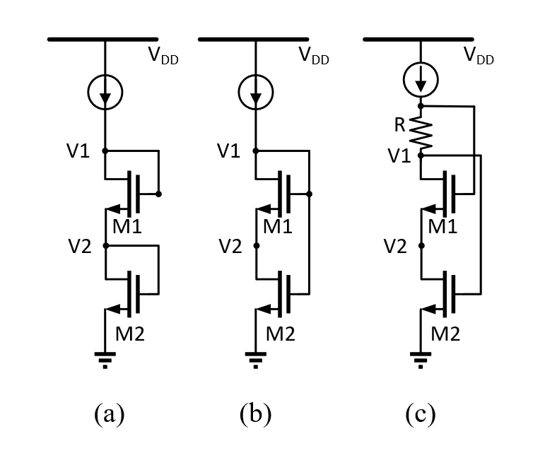
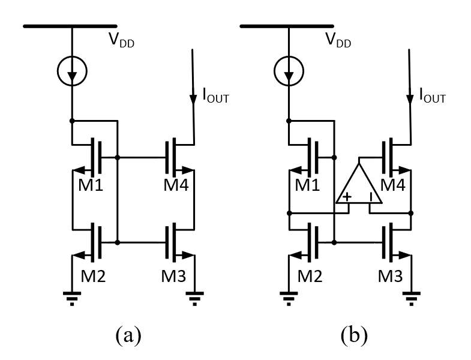

这是一个初学者容易忽略的错误。
在传统Cascode结构的电流镜结构中，如图1(a)，由于V2的电压被钳位在Vgs，导致输出电压裕度变低。于是自然地就想到将M2的G与D断开，释放V2，使V2可以达到Vgs−Vth。便有了图1(b)的结构。但这个结构会有一个严重的问题，导致M2进入线性区！下面简单用公式证明一下。
若M1与M2均工作在饱和区，则对于M2,
V2>V1−Vth,(1)
即
V1−V2−Vth<0.(2)
对于M1，
Vgs2−Vth=V1−V2−Vth>0.(3)
公式(1)与公式(2)两个式子矛盾，而M1是二极管模式，一定工作在饱和区，所以M2工作在线性区。
有一个比较简单的解决办法，即人为将M1、M2的G分开，加入一个电阻R，如图1(c)。为了保证M1和M2均工作在饱和区，R上两端的压降VR要满足Vgst<VR<Vth，Vgst为过驱动电压。还有其他的解决办法，如可以将V1单独再用一个偏置电路去产生，或者将R替换成图1(b)中M1与M2的连接方式，利用一定工作在线性区的M2作为电阻，继而使Cascode中M1与M2的G分开。

图1 Cascode
2019.9.11补充
下面更深入地探讨一下这个结构。首先，为什么要尽管使M2工作在饱和区，M2工作在线性区会有什么问题呢？对于这个单支电路来说，M2工作在饱和区或线性区都没有问题，因为这个电路的负载是个恒流源，M2的Vds受电流源的大小控制。但当把这个结构作为电流镜时，如图2(a)所示，若M2工作在线性区，则M3同样工作在线性区。那么M3的rds就会降低，这一支路的输出阻抗
ro=rds3+rds4+rds3rds4gm3≈rds3rds4gm3(4)
就会降低，从而使Cascode电流镜的效果变差。但这样做也有一个好处，就是如前文所说的增大输出摆幅。
为了增大输出阻抗，另一种比较广泛的做法是再在M4的栅级增加一个运放，在不影响输出摆幅的情况下增大输出阻抗，如图2(b)所示。修改后结构的输出阻抗为
ro=rds3+rds4+rds3rds4gm3(1+A)≈rds3rds4gm3A.(5)
通过选择合适的运放，可以使输出阻抗增加，输出摆幅不变。

图1 Current Mirror
参考文献
Charlon, O., and W. Redman-White. “Ultra high-compliance CMOS current mirrors for low voltage charge pumps and references.” Proceedings of the 30th European Solid-State Circuits Conference. IEEE, 2004.